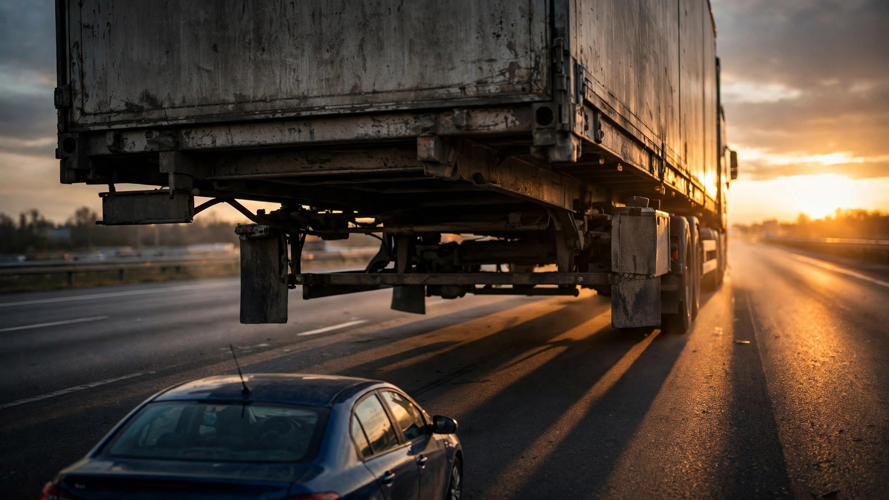

Your Car Won a Safety Award. Nobody Tested Whether It Can Stop Before Hitting a Semi.

Before you sign that lease, you might want to see this. The Insurance Institute for Highway Safety just awarded 18 vehicles a Top Safety Pick for 2026 without requiring them to prove their automatic emergency braking can detect a semi-trailer.[1] The Honda Civic, the Hyundai Elantra, the Toyota Prius all won safety awards, and none were required to pass the IIHS’s own semi-trailer AEB test.
Tractor-trailer underride crashes killed more than 400 people in 2021 alone, rear and side impacts combined, according to a ProPublica investigation that found NHTSA’s own databases massively undercount them.[2] Only 17 states even have a checkbox on police reports for underride, and NHTSA’s own analysis found 78 percent more underride fatalities than its databases captured.[3] In 2022, 5,936 people died in crashes involving large trucks, and sixty-five percent of light-vehicle occupant fatalities in rear truck strikes involved the passenger compartment sliding under the trailer.[3]
So the IIHS built a test for this. In 2026, they rolled out a vehicle-to-vehicle crash prevention evaluation that throws semi-trailer and motorcycle targets at AEB systems at 31, 37, and 43 mph — serious methodology, real closing speeds, actual trailer profiles.[1] One problem: they only require it for Top Safety Pick Plus, and regular Top Safety Pick skips it entirely.
A consumer shopping for a “safe” car can buy one of 18 TSP-awarded vehicles, see the IIHS badge on the window sticker, and have no idea whether its emergency braking system can distinguish an 80,000-pound trailer from open road. IIHS built the test and administers it, but they don’t require it at the tier most buyers actually see.
The strongest defense of this tiered structure is deliberate incrementalism: require the semi-trailer test at TSP+ first, give manufacturers a compliance runway, then tighten TSP criteria later. IIHS has done this before with headlights, pedestrian AEB, and side-impact standards, and it generally works. But the argument assumes underride deaths can wait for a phased rollout, and the families of 400-plus annual victims would take issue with that timeline. IIHS knows how to test for this crash, and awarding a badge called “Top Safety Pick” to cars that haven’t passed it isn’t incrementalism — it’s a branding problem that costs lives while the compliance clock runs.
What to do: If you’re shopping for a new car and highway driving is part of your commute, look for TSP+ specifically, not just TSP. The plus sign means the vehicle passed the semi-trailer and motorcycle AEB tests, and without it, nobody verified whether your car’s emergency braking works against the biggest thing on the road — check your vehicle at iihs.org/ratings.
Sources & References
- IIHS, 2026 Top Safety Pick Award Criteria. iihs.org/ratings
- ProPublica/FRONTLINE, “How Regulators Failed to Act to Prevent Underride Crashes,” 2023. propublica.org
- NHTSA, Side Underride Protection: Report to Congress, June 2024. nhtsa.gov
- NHTSA, Large Truck and Bus Crash Facts 2022. nhtsa.gov
- AutoGuide, “63 Vehicles Have Earned IIHS Safety Awards So Far in 2026.” autoguide.com